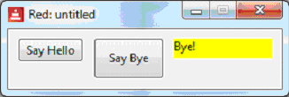
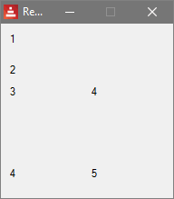
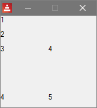
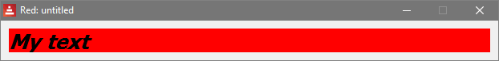
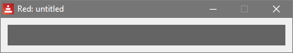
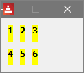

Red by Example - an accessible reference by exampleLast update on DATUMvidindex parse vid series help about links contact 1. BUILDING A GUI WITH RED'S VID
1.1. Introduction
1.2. Terminology: faces, controls
1.3. Getting Started - Hello World
2.1. Creating A Face (Control)
2.2. Using Facets (Properties) with /
3.1. Layout - across, below, return
3.1.1. Layout - Example 1
3.1.2. Changing Sizes - Example 2
4.1. Options - Facets
4.2. Options - Colors
5.1 Style - Shortcuts
6.1. Events/Actors
7.1. Dialogs
8.1. Separation of GUI And Code
9.1. List Of Faces
1. BUILDING A GUI WITH RED'S VID1.1. Introduction
VID (Visual Interface Dialect) is a simple language to help you create a
GUI. It is itself written in Red. Typically, your programs will be a mix
of VID code (to lay out and create the GUI controls) and Red code to add
functionality.
Note that this is for beginners. For full functionality, consult the
official VID documentation, and also the View documentation. (VID is built
on top of View.)
VID: https://doc.red-lang.org/v/v0.6.0/gui/VID.html
View: https://doc.red-lang.org/v/v0.6.0/gui/View.html
Shape-drawing is not explained here. You need the Draw dialect, not
covered. The official documentation is at:
https://doc.red-lang.org/en/draw.html
There are some more Draw examples at:
http://www.red-lang.org/2016/03/060-red-gui-system.html.
Advanced users might be interested in Red's reactive programming facilities:
http://www.red-lang.org/2016/06/061-reactive-programming.html
This can simplify some GUI programs that involve interaction between controls.
top
1.2. Terminology: faces, controls
Red provides a set of over 20 items such as buttons, drop-downs, check
boxes. In other languages, they are known as controls, GUI components,
widgets, elements, etc.
In Red they are called 'faces'. Thus, a button is a face.
Faces have properties (size, colour etc) and in VID they are known as
options. You will also see the term 'facet' also used in documentation.
This is the proper name, but sometimes we will drift into more familiar terms.
top
1.3. Getting Started - Hello World
There are over 20 controls, but we will start with two of the simplest: a
button, and a 'text' (a text-field - a text in Red simply displays
a string that we place in it.
Here is the code:
Red [
needs 'view
]
view [
button "Say Hello" [message/text: "Hello!"]
button "Say Bye" 70x40 pink [message/text: "Bye!"]
message: text yellow 100x20 "First program"
]
And here is a screenshot, after we clicked on the "Say Bye" button:

Basically, each button places a different string in the yellow message 'text'.
We will now look at parts of the program.
top
2.1. Creating A Face (Control)
A VID program must have "needs 'view" at the top. We will omit this part
from now on, in our tiny examples.
We put the faces inside a view[ ...] block.
The general pattern for defining a face is:
name: type options [Red code to be executed]
Look at our message, above:
message: text yellow 100x20 "First program"
We invented the name 'message'. The buttons refer to it, so it needs a name.
It is a text type.
We used 3 options. The options we chose specify the background colour, the
size, and the initial string to display.
As regards the size, the default is 80x24 pixels (horizontal x vertical) for
most faces. Look at the first button to see the default size.
As regards colours, common colours are named in Red. For example, we have
green, blue, yellow, red, pink, etc.
The options can be in any order - they are different literal types, hence
can be identified by VID. Note that we cannot use variables here.
If we don't use an option, a default value is used.
We don't click on the text, so no Red code is attached.
Moving on to our first button:
button "Say Hello" [message/text: "Hello!"]
Nothing else refers to it, so it need not have a name. (Though we might
choose to name it, to clarify its purpose.)
The type is button
We have one option - the text (a string) to be displayed on the button.
It has a block of code attached, which will be executed when the button is
clicked.
top
2.2. Using Facets (Properties) with /
In Red, facets are expressed as refinements, with /.
Faces often have a text refinement, so if we put
button "Say Hello" [message/text: "Hello!" print face/text]
then the program prints "Say Hello" on the console. Note the use of 'face'
to refer to the current face - the button here. (If a face is named, we can
use either 'face' or its name).
There is a possible confusion here with 'text' being a type of control, and
also a property. This is the only control where this confusion exists.
Thus, in the above code, message/text is the string contents of the text
item 'message'.
For now, you could experiment with changing the colours and sizes of the 3
faces, and adding some more buttons and texts.
There are some areas we have NOT covered:
- other options (fonts etc)
- layout. Above, we let VID position the 3 items horizontally.
- Events. We used a click, but there are other events,e.g. 'hover'.
We cover these areas below, at beginner level.
top
3.1. Layout - across, below, return
To position GUI elements:
- horizontally, use across
- vertically, use below
- reset to left side of a window, use return
top
3.1.1. Layout - Example 1
Here we use some text faces.
view [
below text "1" text "2"
across text "3" text "4"
return
across text "5" text "6"
]

top
3.1.2. Changing Sizes - Example 2
view [
below text 15x15 "1" text 15x15 "2"
across text 15x15 "3" text 15x15 "4"
return
across text 15x15 "5" text 15x15 "6"
]
which produces:

Using user-specified sizes for GUI elements can improve the look.
top
4.1. Options - Facets
Every GUI element has properties like:
- size
- letter properties (bold, italic, underline)
- font-size
- background color
- etc.
A full list of options (which includes datatypes and keywords) is available
in the official VID document:
https://doc.red-lang.org/v/v0.6.0/gui/VID.html
Example:
view [
text 600x30 bold italic red font-size 20 "My text"
]
which produces:

We used the options:
400x30 = size of the text element in pixels
bold = make the letters bold
italic = make the letters italic
red = make background red
font-size = make the letters the size specified
Using a different font is done like this, with a block:
message2: text "Hello" font[name: "Consolas" size: 12 color: blue]
top
4.2. Options - ColorsIn Red, colors are stored as tuple!s.
If you want to know which colors you can use, type:
? tuple!
in the Red console.
Also you can create any color using a tuple! rather than its name, like so:
message3: text 100.100.100 100x20 "Hi!"
which, for example, is one of the 50 shades of gray.

The order of the properties is not relevant. Just put them right after the
GUI element specified.
top 5.1 Style - ShortcutsWe can create shortcuts for frequently-used faces and properties. For
example, if you are going to need lots of tiny yellow bold texts, you could
create a style, giving it a name (mytext here).
Once created, we can use the style as if it was a built-in face, as in:
view [
style mytext: text 8x8 yellow bold
across mytext "1" mytext "2" mytext "3"
return
across mytext "4" mytext "5" mytext "6"
]
which produces:

The VID h1 .. h5 faces were created in this way.
top 6.1. Events/Actors
In Red, an 'actor' is code that the user provides to handle an event. We
shall use the more familiar 'event-handling' term.
Recall our button above:
button "Say Hello" [message/text: "Hello!"]
The block of code handles the button-click event. But there are other
events to do with buttons, such as hovering the mouse, or a double-click.
What about those?
The answer is that each control has a default event, which we need not
specify. The default is often the most important one, and for a button, it
is a single-click. In Red, this event is named 'down', not 'click'.
So, these two lines of code have the same effect:
button "Say Hello" [message/text: "Hello!"]
button "Say Hello" on-down [message/text: "Hello!"]
The second line is explicit about the event, using "on-eventName".
What if we wanted to detect a hover? We put:
button "Say Hello" on-over [message/text: "Hello!"]
If we wanted to use both events, we could put:
button "Say Hello"
on-down [message/text: "Hello - you clicked!"]
on-over [message/text: "Hovering!"]
The full list of event names is available in the official documentation at:
https://doc.red-lang.org/en/view.html#_events
The default event for a face is covered in the Red-By-Example entry for that
face.
Just because there is a default event does not mean that you have to use
it. For example, in a data-entry form, the user might enter data in such
items as drop-downs, check-boxes etc. The only event we use might be from a
"form-completed" button.
top
7.1. Dialogs
Red has some popup dialogs for files, directories, and fonts. They are not
part of VID, but fit with GUI programs. They are:
request-file request-dir request-font
top
8.1. Separation of GUI And Code
In small programs, we can put Red code in the view section. Here is
an example with two faces, and one event:
view [
message: text yellow "Hello!"
button "Press Me" [message/text: "Goodbye!"]
]
Now we will pretend that it is a bigger program, with say 20 faces, and a
few hundred lines of code. It can be useful to put the code in a
function, like this:
bye-button-clicked: function[] [
text-message/text: "Goodbye!"
]
view [
bye-button: button "Press Me" [bye-button-clicked]
text-message: text yellow "Hello!"
]
We have named the button so it is easier for us to find the function that is
executed when we click it.
As regards naming, there is no standard style, but one approach is to
include the purpose and type, such as:
bye-button
country-drop-down
etc.
The program is a bit longer, yes. For larger programs it can pay off,
making it easier to modify the layout. In these notes - which have many
small programs, we will not always use this approach.
top
9.1. List Of Faces
Here is a list of all the faces in VID, with links to some more details -
including a code example and their default events.
VID Name Description
-------- --------------------------------
base - a basic region for images, drawing etc,
text - displays a single line of text
button - conventional clickable button
check - check-box
radio - radio-buttons, normally used as a group
field - single-line input
area - multi-line editable text region
text-list - a vertical list of strings for selection
drop-list - a drop-down text-list.
drop-down - a drop-down text-list with edit field (combo)
progress - progress bar
slider - draggable slider
camera - connects to a camera feed
panel - a container for other faces
tab-panel - a set of tabbed panels
window - an OS window
screen - the complete screen
group-box - Not covered here
h1 - a text preset to font-size 32
h2 - a text preset to font-size 26
h3 - a text preset to font-size 22
h4 - a text preset to font-size 17
h5 - a text preset to font-size 13
box - a base with a default transparent color.
image - a base, size 100x100. Needs image! option
top
|